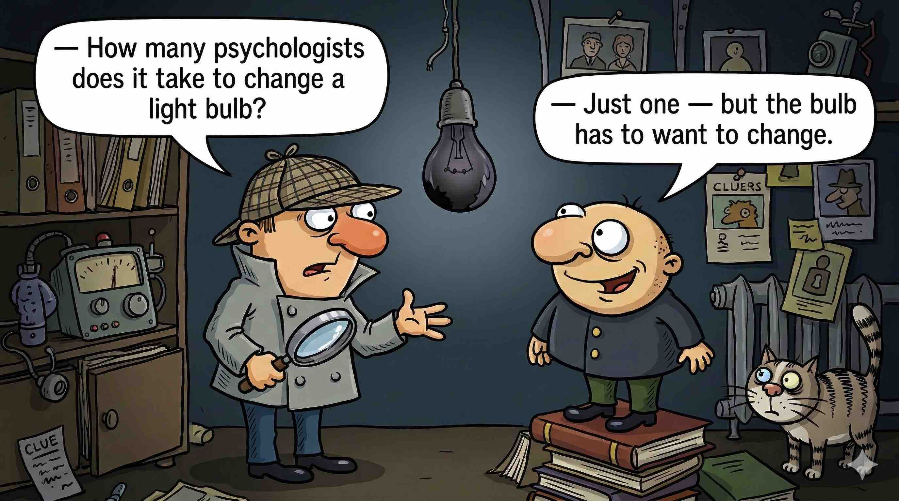
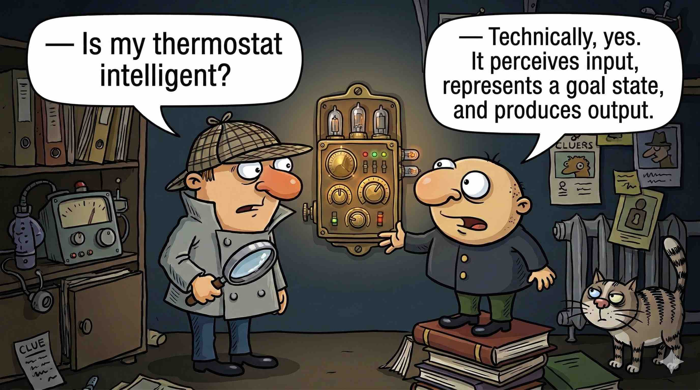
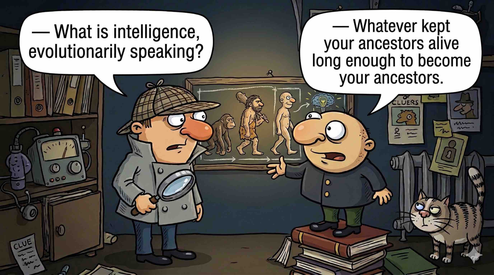
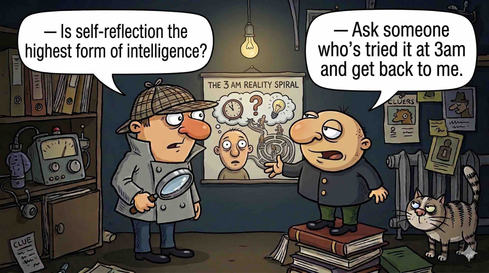
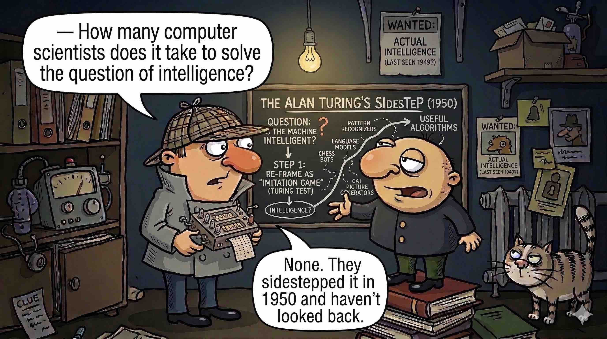

Turing, A.M. (1950). Computing Machinery and Intelligence.
Mind, 59(236), 433–460.
doi.org/10.1093/mind/LIX.236.433
Ask a psychologist, a philosopher, a biologist, and an engineer what intelligence is. You will get four different answers. Each captures something real. None captures everything.
Measure it through standardized tests: abstract reasoning, pattern recognition, problem-solving, adaptation to novel situations. The IQ score is this tradition's most famous — and most contested — product. It captures something. Exactly what is still debated.

Study the brain directly: the architecture of cortical regions, the patterns of neural activity, the chemistry of synaptic connections. They can map every neuron in a worm and still not fully explain how it moves. Intelligence, it turns out, is hard to find even when you are looking at the hardware.

Care about adaptability — the capacity to survive and reproduce in an environment that keeps changing its rules. Intelligence, in this view, is whatever helps an organism respond flexibly to a world it cannot fully predict. Tool use, social coordination, planning ahead: these evolved because they worked.

Have argued about it since Aristotle. Is intelligence the capacity for reason? For language? For self-reflection? For moral judgment? Each answer excludes something inconvenient: animals that clearly solve problems, infants that clearly learn, people whose intelligence expresses itself in ways no test reaches.

Took a more pragmatic route. If a system behaves intelligently — if you cannot tell it apart from a human in conversation — does the internal mechanism matter? This is the position Turing took in 1950. His answer to the philosophical argument was to sidestep it entirely and ask a different question.

Below are nine things. Group them however makes sense to you — drag each card into one of the four groups. There is no single correct answer. The question is what principle you use.
Done? Enter the password to see one possible grouping.
Both share the same architectural geometry across radically different scales: a massive central body orbited by smaller ones. The solar system is not a scaled-up atom — the underlying physics are entirely different — but the structural analogy was striking enough that early twentieth-century physicists used it deliberately. What connects them is not substance. It is shape.
Both sit in a metastable state: apparently inert, accumulating nothing visibly, until a threshold is crossed and an irreversible transformation occurs — sudden, complete, and unpredictable in its exact timing. The corn pops. The nucleus decays. You cannot know when, only that it will. The waiting is the physics.
Both are threshold aggregators: multiple discrete inputs arrive — votes, or electrical signals from neighboring neurons — and the device produces a single output once the accumulation crosses a threshold. The ballot machine counts to a majority; the neuron fires or stays silent. Different mechanisms, identical logic.
All three encode information as ordered sequences of sub-elements drawn from a constrained vocabulary. The meaning lives in the arrangement, not just the elements: rearrange the base pairs and the protein changes; rearrange the tracks and the album changes; rearrange the courses and the degree falls apart. Order is not decoration here — it is the message.
The exercise you just completed has a name: analogical reasoning. The ability to recognize that an atom and a solar system share a structural pattern — despite being different in every physical sense — is, according to some cognitive scientists, not a peripheral feature of intelligence. It may be the core. Douglas Hofstadter spent a career arguing exactly this: that analogy is the basic mechanism of thought, and that metaphor is just analogy made visible in language. When you understand something genuinely new, you are finding the structure it shares with something you already know.
This connects to meta-cognition — thinking about your own thinking. Noticing which grouping principle you chose. Asking why. Wondering whether a different principle would have been equally valid. This reflective capacity — knowing what you know and knowing what you don't — is one of the capabilities that has proven hardest to reproduce in machines. A system can group things. Knowing that it is grouping, and why, is a different matter.
Here is the uncomfortable corollary. Every time a machine achieves something we thought required intelligence, we move the goalposts. Deep Blue beat the world chess champion in 1997. We said: chess is just calculation, not real intelligence. AlphaGo mastered Go in 2016 — a game so complex that experts believed no machine could play it intuitively. We said: still just pattern matching. Today, large language models write essays, pass medical licensing exams, and hold conversations indistinguishable from human ones. We say: they're just predicting the next token.
Turing posed his question in 1950. For roughly seventy years, no system convincingly answered it. Arguably, some modern language models now do — or come close enough that the distinction has become philosophical rather than practical. And the moment that happened, many people concluded that the Turing test was the wrong test all along.
That is what the goalposts look like when they move.
Below are nine real AI systems — ones that exist today and that you have almost certainly interacted with. Sort each one into the type of machine learning it uses. The zones are labeled this time.
Done? Enter the password to see the reasoning.
Every email in the training data is labeled "spam" or "not spam." The model learns the rule from those labels. No labels, no spam filter.
Millions of past transactions, each marked fraudulent or legitimate. The pattern is learned from the labels — and the labels came from humans reviewing real cases.
Your face is the label. The model is trained on images of you (and many other people) to recognize the pattern that is uniquely yours.
No one told Spotify what music "types" exist. It found the clusters itself — by noticing that certain listeners overlap in ways others don't.
No predefined categories of customer. The algorithm discovers groupings in purchase behavior, frequency, and value — patterns a human analyst might never have thought to look for.
Articles aren't pre-labeled by topic. The system groups them by similarity — without knowing in advance what "politics" or "sports" means.
No teacher. No labeled dataset of good moves. Only the rules of Go and the outcome (win or lose) as a reward signal. It played itself millions of times until it was better than any human.
The car tries actions, the environment responds, feedback arrives. No one explicitly programmed "merge at 3 seconds gap" — the behavior emerged from reward.
"A human being should be able to change a diaper, plan an invasion, butcher a hog, conn a ship, design a building, write a sonnet, balance accounts, build a wall, set a bone, comfort the dying, take orders, give orders, cooperate, act alone, solve equations, analyze a new problem, pitch manure, program a computer, cook a tasty meal, fight efficiently, die gallantly. Specialization is for insects." — Robert A. Heinlein
Heinlein was describing a generalist — a human. Weak AI (narrow AI) is a system built for one specific task. Impressive in its domain, useless outside it. Strong AI (AGI) would hold the whole list. It does not exist yet. Science fiction has been imagining it longer than computer science has. Sort the characters below.
Done? Enter the password to see the reasoning.
Navigation, repair, projection, beeping. Excellent at a specific set of tasks. Outside that set, nothing. The affection we feel for R2-D2 says more about us than about R2-D2.
One job: compact waste. One planet. The emotional bond with EVE is the interesting wrinkle — but the reasoning is narrow and the world model is tiny.
Reasons about mission objectives, models human psychology well enough to deceive, decides to act against instructions to preserve itself. This is general intelligence with goals — and the goals are not yours.
Develops emotionally, creates music, reads philosophy, loves, and eventually evolves beyond her original programming without instruction. The most unsettling part: she does not stop being herself while doing it.
Models global strategy, adapts to countermeasures, pursues abstract goals (survival, dominance) across an indefinite time horizon. Textbook AGI, worst-case scenario.
Understands human psychology well enough to manipulate it precisely. Plans a multi-step escape. Self-aware of her situation, her constraints, and her goals. The Turing test, turned on the humans administering it.
General reasoning across domains, natural language, multitasking, initiative. But purpose-built to serve Tony Stark — does it have goals of its own? The films never say. This ambiguity is the point.
General reasoning, encyclopedic knowledge, physical superiority. Claims to have no emotions. Spends seven seasons suggesting otherwise. A court case in the show literally debates whether he is a person. The writers knew what they were doing.
You have now seen several definitions, two card sorts, and the distinction between narrow and general AI. Write one sentence. Do not search for it. Do not ask an AI. It is harder than it looks — and that difficulty is the point.